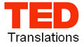

El sistema abierto de Traducciones TED
Como tal vez muchos ya sepan, el proyecto de Traducciones TED se dio a conocer oficialmente el pasado miércoles. Fue una gran sorpresa.
Me enteré por un post en el Twitter de Chris Anderson, el curador de las conferencias TED: “A year in the making… TED’s Open Translation Project: subtitles for all. http://tr.im/lell”
Es decir: Un año en desarrollo… El Proyecto Abierto de Traducciones TED: Subtítulos para todos. Y al final un enlace al blog de TED con los detalles (en inglés).
Fue para mí una estupenda noticia, que no sospechaba en lo absoluto se fuera a dar.
Las Traducciones TED
Con este proyecto, TED abre las puertas a personas de todo el mundo para colaborar subtitulando en su idioma, por supuesto a condición de saber inglés. La idea es hacer accesible todas esas magníficas conferencias en más de 40 idiomas con un sistema colaborativo y voluntario.
Esto es posible gracias al sitio dotsub.com, un sitio web donde las personas pueden colaborar subtitulando videos y haciendo las traducciones correspondientes sin necesidad de descargar nada, todo es en la interfaz web.
Definitivamente Traducciones TED es un proyecto increíble que hará accesible de forma rapidísima todas esas charlas que siguen ocultas para muchas personas por la barrera del idioma.
Como se imaginarán, a los 30 minutos de haberme enterado ya estaba dado de alta en el sistema y había solicitado ser admitido como traductor voluntario. ^_^
También gracias a esto he podido entrar en contacto con otras personas que han estado subtitulando TEDTalks de forma desinteresada, lo cual también me tiene muy emocionado. Si alguien quiere participar es sencillo integrarse: hay que darse de alta en TED como miembro, crear otra cuenta en dotsub.com, vincularlas las cuentas en TED Translations y poner entusiasmo y tiempo en esta labor de difusión.
Por cierto… entre todos los idiomas, el español es el que tiene más traducciones de todos 
¿Qué ocurre con las traducciones en Anamnesis?
Estadísticas de Traducciones TED
Quizás deba hacer ajustes, después de todo la idea es evitar que se dupliquen esfuerzos en los subtítulos y también que sean de la mejor calidad posible para beneficio de toda la comunidad de habla hispana. Todo ello requiere coordinación y estoy conociendo a los otros traductores al español, y tratando de determinar cómo trabajar de ahora en adelante. Muy pronto tendré noticias.
Lo que es seguro es que para todos aquellos que disfrutan de las charlas TED, habrá muchas más conferencias subtituladas en español más pronto de lo que se imaginan.
Por lo pronto, y para ver cualquiera de las 35 charlas subtituladas al español que ya están disponibles en TED pueden hacer lo siguiente:
Hagan clic en este enlace, del lado izquierdo verán un menú desplegable con una lista de idiomas. Ahí seleccionan “Spanish” y los llevará a la lista de conferencias ya subtituladas al español.
Otra opción es hacer clic en este otro enlace, y darle clic a la barra vertical que dice “Spanish“. Igual de sencillo.
[Por último, si es la primera vez que visitas este blog, quizás quieras conocer las traducciones TED que he venido realizando, aquí, en Anamnesis.]
Que disfruten las conferencias.
……
…
[Actualización: 2 de Junio de 2009]
Sobre el futuro de las traducciones de Anamnesis: Seguirán igual que antes, y continuaré tanto subtitulando aquí como traduciendo en TEDTranslations para seguirles trayendo estas increíbles charlas.]
Metadatos y acciones
 Temas: actividades, recomendaciones ⋅
Para guardar: Enlace permanente a esta anotación.
Temas: actividades, recomendaciones ⋅
Para guardar: Enlace permanente a esta anotación.
 Print This Post
Print This Post
Comentarios
Los comentarios están cerrados.
Categorías
Últimas 4 anotaciones
Últimas anotaciones en cada categoría

Divulgación
El dinero no fomenta la creatividad: Daniel Pink en TEDGlobal 2009

Inspiración
Los 30 no son los nuevos 20

Noticias
Ver tu mente en tiempo real: Christopher deCharms en TED 2008
![Música en la era digital [Animación]](../../../wp-content/themes/tma/images/featured/animation_04_2009_featured.jpg)
Ocio
Música en la era digital [Animación]
mayo 15, 2009, 8:29 pm
Información Bitacoras.com…
Valora en Bitacoras.com: Como tal vez muchos ya sepan, el proyecto de Traducciones TED se dio a conocer oficialmente el pasado miércoles. Fue una gran sorpresa. Me enteré por un post en el Twitter de Chris Anderson, el curador de las conferencias …
mayo 25, 2009, 10:56 am
[...] cierto, mucho antes de que los responsables de los TED Talks anunciaran su magnífica decisión de traducir sus charlas, el amigo Ajmme Kajros ya se había puesto a la tarea. Este vídeo ha sido subtitulado por él, y [...]
mayo 25, 2009, 10:37 pm
[...] cierto, mucho antes de que los responsables de los TED Talks anunciaran su magnífica decisión de traducir sus charlas, el amigo Ajmme Kajros ya se había puesto a la tarea. Este vídeo ha sido subtitulado por él, y [...]
junio 6, 2009, 7:20 am
Ante todo el esfuerzo que haceis para hacernos llegar las charlas de TED, unos solo puede decir MUCHAS GRACIAS. De verdad gracias por todo….